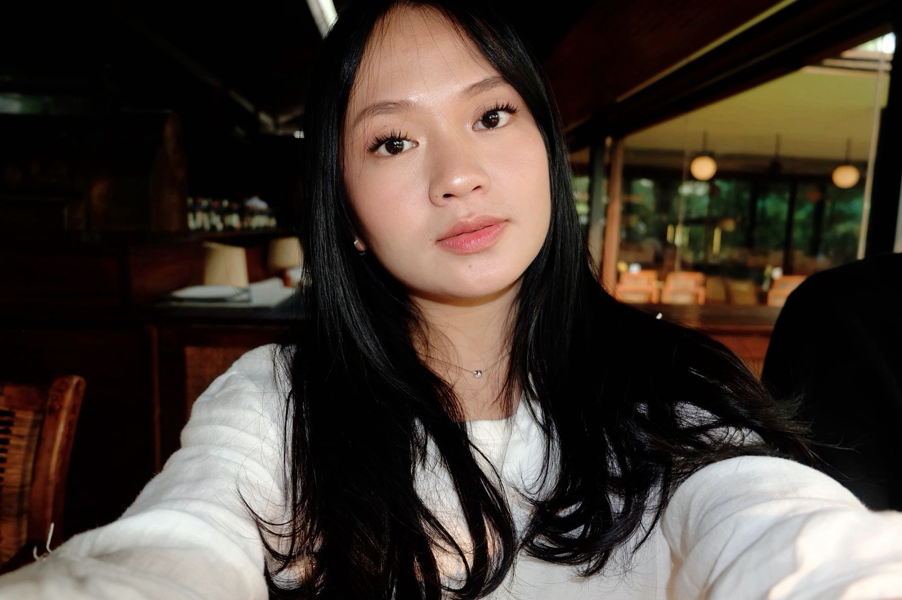

NIM: 202432100 — Sistem informasi
"Halo, nama saya Nurul Yasila, mahasiswa semester 4 dari jurusan Sistem Informasi, Institut Teknologi PLN. saya saat ini sedang mendalami dunia pemrograman web. Saya menikmati proses belajar membangun fungsionalitas di sisi web dan berharap bisa terus mengembangkan keterampilan teknis saya di bidang ini ke depannya."